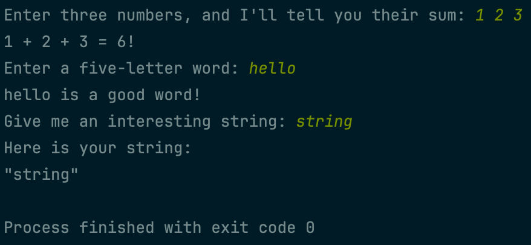
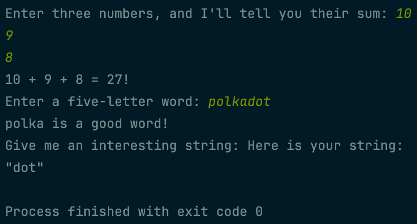
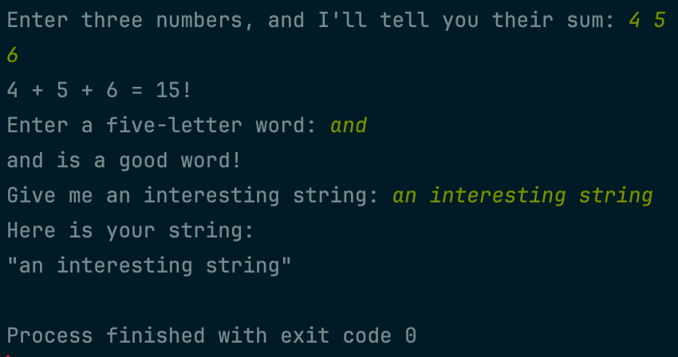

Checking out the documentation for
std::cin, we see that it’s classified as formatted
input. Checking out the documentation
for std::getline, we see that it’s classified as
unformatted input. In this project, we’ll explore the details
of what this means! We’ll also explore redirecting input and output
using files!
 Example 1
 Example 2
 Example 3